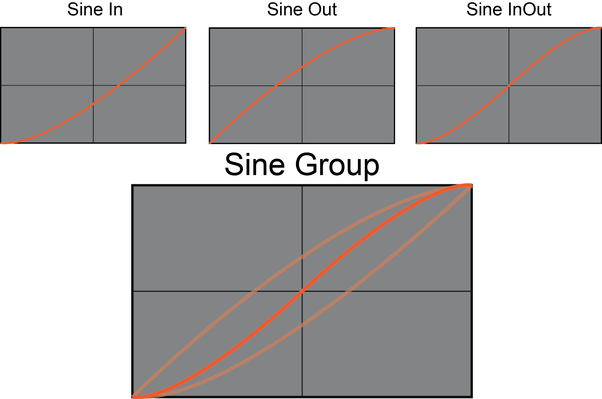
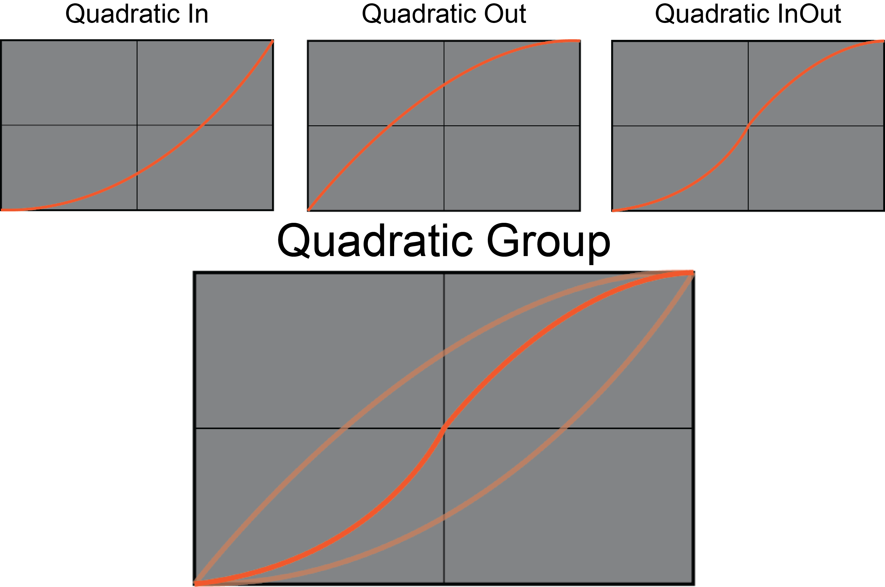
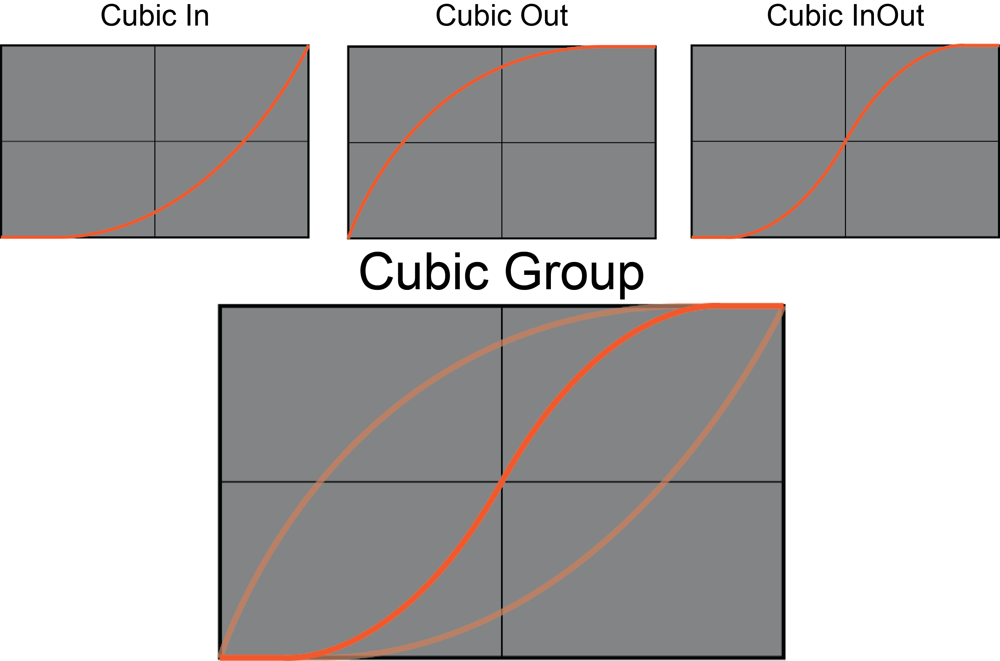
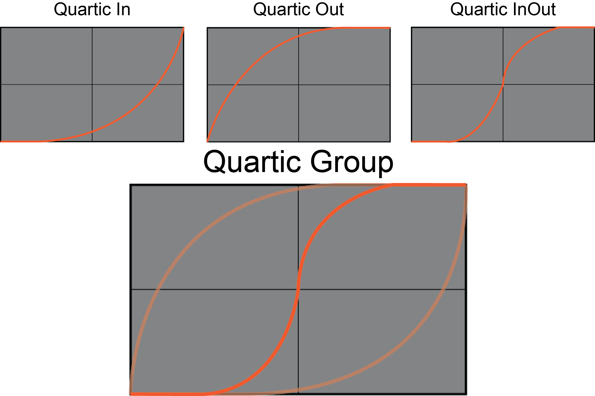
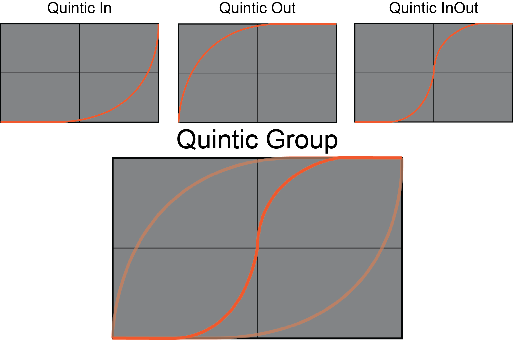
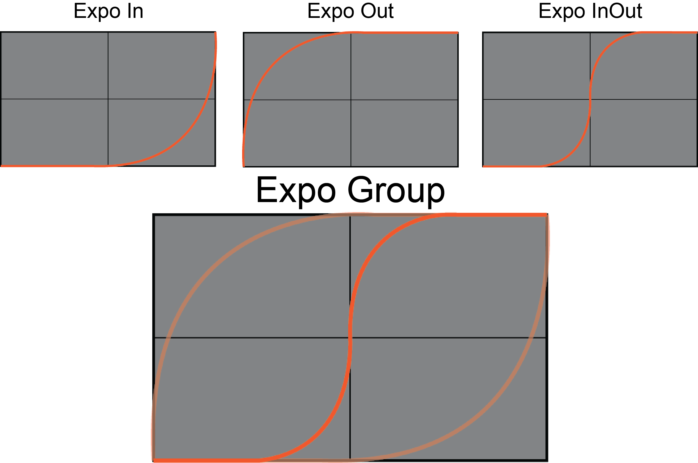
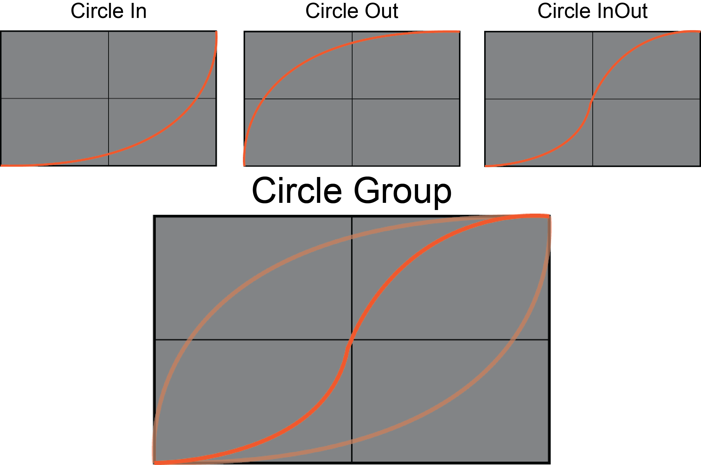
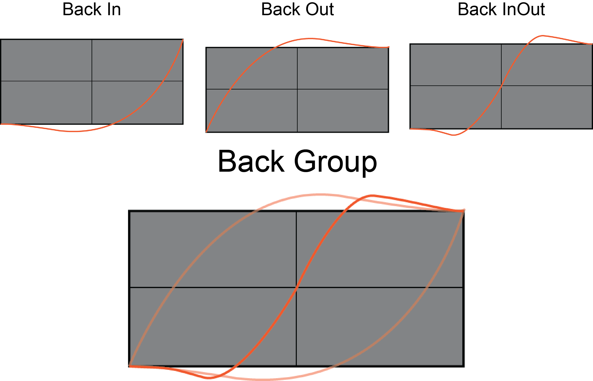
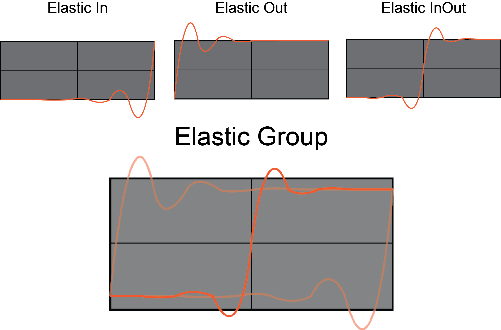
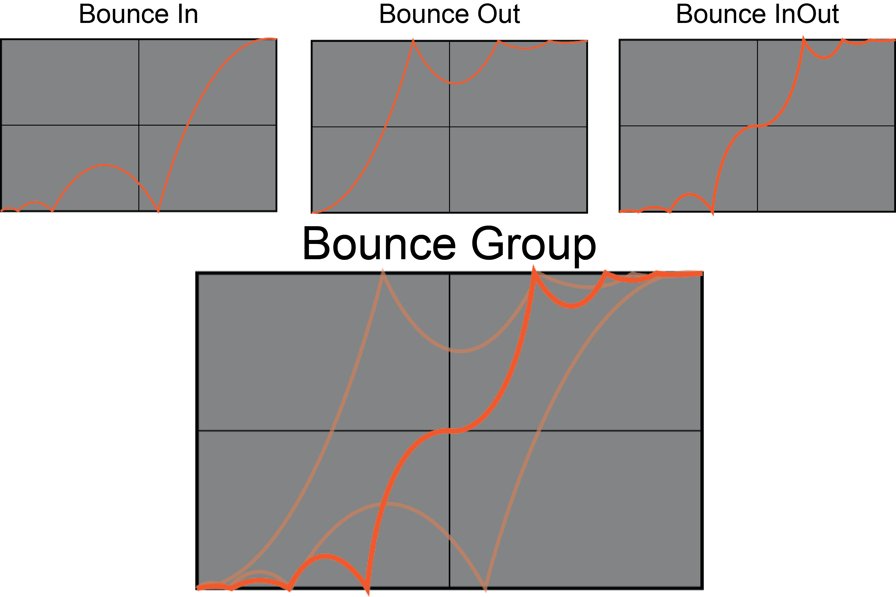

Using Custom Eases in Actions
This lesson will cover using Custom Eases in your Actions with the aid of the SampleCurve resource. First, we’ll take a more in-depth look into what an ease actually is, what they can do for you, and what they look like when drawn on a sample curve.
A Closer Look at Easing Functions
Eases are used primarily in what is called “tweening”, short for in-betweening (and Actions are Zero Engine’s form of tweening). Tweening is a procedure for interpolation between two values that can provide animation through the use of mathematical functions without the user having to adjust any frames herself. Eases are functions that control the rate of acceleration of the change in value. Usually, eases are used to make animations look more natural or “life-like”, though the most basic of eases–Linear–is decidedly sterile-looking or robotic, as we can see in this example of a simple moving platform:

The platform moves side to side at a steady, constant rate of motion. In other words, its rate of movement is linear. For the sake of comparison, let’s look at another, nicer-looking, more “life-like” ease; specifically, the QuadInOut ease (which uses the quadratic function to derive acceleration):

As you can see, in this case, the acceleration changes throughout the movement from left to right (and vice versa). It start slow, builds up speed, then slows back down once it nears the end. You have probably come across this type of movement in your everyday life. For example, elevators use a non-linear movement. Imagine if a high-speed elevator in a high-rise building did not change its acceleration, and the elevator comes to a complete stop while at the relatively high speed it moves at as it passes floors: every one in it would go flying to the ceiling. Instead, as the elevator approaches its destination, it slows down so that it comes to a smooth, non-person-launching stop (this might be something to think about when creating elevator platforms in your own games if you’re looking to keep things realistic).
Standard Easing Classes
There are five “standard” (and consequently, the most popular) easing types: Linear, Quadratic, Cubic, Quartic, and Quintic. These names refer to the power by which a part of the ease equation is raised. Linear = 1, Quadratic = 2, and so on. Whether the ease is In, Out, or InOut depends on whether the animation desired starts slow and then speeds up at the end (EaseIn), starts fast and then slows down at the end (EaseOut), or starts out slow, speeds up, but then slows back down at the end(EaseInOut). When we increase the power in an ease, we are just multiplying the essential part of the ease equation (the representing current percentage of completion of the tween) by itself. For example, if we had an an EaseOut that is moving to 70% of the desired value change, you would multiply 0.7 by the power of your ease. For Quadratic, it would be two, thus: 0.7 * 0.7 = .49, instead of 0.7. This means we would move to 70% of the desired value in 49% of the time it would take linearly, moving quicker at the start and slower at the end. To make this relationship explicit, let’s take a quick look at the function usually used for determining ease (though this one will just be a linear tween without any proper easing applied).
function LinearTween(beginningVal, changeToVal, currentTime, totalTime)
{
return changeToVal * currentTime / totalTime + beginningVal;
}
Here’s what each argument of the function stands for:
beginningValis the beginning value of the property we are changingchangeToValis the change between the beginning value and the end value of the property that is desiredcurrentTimeis the start time of the tween and can be in any value you want (frames, seconds, etc...) as long as the value stays the same for totalTime as well.totalTimeis the total amount of time the tween will take
One thing to note is that the currentTime / totalTime portion of the equation represents the percentage of completion for the tween (if 5 seconds of a 10 second duration has elapsed, it is 50% of the way through). To see this in action, let’s look at a simple example. At the start of a level, we want a platform at Real3(0,5,0) to move up the y-axis to Real3(0,15,0) over the course of 2 seconds.
- Our
beginningValwould be 5 (this is the y-value fromReal3(0,5,0)) - Our
changeToValwould be 10 (this is the differnce in the y-value fromReal3(0,5,0)toReal3(0,15,0)) - Our
currentTimewould be 0 (seconds) as we want the tween to start when the level starts - Our
totalTimeis 2 as we want the tween to occur over 2 seconds - Using our equation, we end up with: 10 * 0 / 2 + 5 which equals 5, leaving us where we started.
Let’s look at what happens, however, when we look at some point during the tween itself, say 50% of the way through. This would only change our currentTime value to 1 (2 * 0.5 = 1). Our equation now gives us:
10 * 1 / 2 + 5 = 10
10 is the exact midpoint on the y-axis between our start and end values of 5 and 15, which is exactly the value we should expect given that we had changed our equation to look at 50% of the way through the tween. As you can see, with any change in the percentage of the completion of tween (the currentTime/totalTime portion of the equation), you will get the value at that particular percentage of time elapsed.
As you might have deduced already, the portion of this equation that will be affected by the powers associated with the standard eases is currentTime/totalTime. We could even substitute 0 for beginningVal and 1 for changeToVal so that we end up with a factor, which we could then multiply by the difference between our values, while also adding back in the original value, to end up with the same thing as our original equation, like so:
function EasingFunction(beginningVal, changeToVal, currentTime, totalTime)
{
return changeToVal * currentTime / totalTime + beginningVal;
}
function EaseIn
{
var easeFactor = this.EasingFunction(0, 1, currentTime, totalTime);
this.Owner.PropertyToChange = (endValue - originalVal) * easeFactor + originalVal;
}
With this in mind, let’s now look at the function for a quadratic ease, which will also include a new argument (the power by which to multiply our completion percentage):
function QuadEaseIn(0, 1, currentTime, totalTime, easePower)
{
easePower = 2;
return changeToVal * Math.Pow(currentTime / totalTime) + beginningVal;
}
When can further reduce this function by just removing the value parameters from the function altogether. Doing so, as is shown directly below, will work nearly identically as our equation above in all the standard eases:
function QuadEaseIn(currentTime, totalTime, easePower)
{
easePower = 2;
return Math.Pow(currentTime/totalTime, easePower);
}
For an EaseOut function, where we start fast and then slow down, we use the same equation but merely subtract it from 1 so that it comes at the end of our tween:
function QuadEaseOut(currentTime, totalTime, easePower)
{
easePower = 2;
return 1 - Math.Pow(1 - (currentTime/totalTime), easePower);
}
For the EaseInOut function, we’ll need to incorporate our previously omitted parameters back in, like so:
function QuadEaseInOut(beginningVal, changeToVal, currentTime, totalTime, easePower)
{
easePower = 2;
if((currentTime /= totalTime / 2) < 1)
{
return changeToVal / 2 * Math.Pow(currentTime/totalTime, easePower) + beginningVal;
}
else
{
return -changeToVal / 2 * (currentTime * (currentTime - 2) - 1) + beginningVal
}
}
The rest of the standard eases (cubic, quartic, and quintic) can be derived in the same pattern as above except that your ease power will go up by one for each consecutive power. There are also more complicated, exotic In, Out, and InOut ease functions that simulate “bounce” and “elastic” effects that can be found easily through a web search.
We can also visually represent all of these eases on a graph. In Zero, we can plot these graphs on a resource named SampleCurve and actually use them as our ease parameter in Actions.
Visualising Eases
As you may have noticed above, eases are primarily a function thatson the change in value over time. This means we can easily visualize them using a standard 2D graph. Here are all of the most commonly used standard and exotic eases visualized on a graph.
Sine Eases

The Sine group, as you might have guessed, is based off a sine wave. It’s one of the most commonly used eases behind Quadratic and is already built into Zero’s Ease types.
Quadratic Eases

The Quadratic group is by far the most popular and commonly used ease type as it provides a natural and nicely-flowing animation. The three Quadratic eases are also built into Zero’s ease types.
Cubic Eases

Whereas the Quadratic group raises the percentage of completion (currentTime/totalTime as in the functions above) by a power of two, cubic raises it by three, providing a slightly more “dramatic” effect.
Quartic Eases

The Quartic group is identical to the Cubic group except that it raises the percentage of completion by a power of four.
Quintic Eases

Again, the Quintic group is identical to the Cubic group except that it raises the percentage of completion by a power of five.
Expo Eases

“Expo” is short for Exponential and as you can imagine, accelerates, decelerates, or both extremely quickly.
Circle Eases

Another self-explanatory one. The curves in this ease are derived from the equation for half a circle.
Back Eases

This group is the first one we see that that actually under- and over-shoots its target. This group is great for use in bringing menus up and down.
Elastic Eases

One of the exotic groups. These eases give the illusion of elasticity, both at the front of the action, the end, and at the front and end.
Bounce Eases

Another of the exotic groups, these eases give the illusion that an object bounces at the beginning, end, or both during the action that uses them.
Now that we’ve gone through the most commonly used standard and exotic eases, let’s take a look at how you can make some of these yourselves–as well as any of your own invention–as sample curves in Zero.
Using the SampleCurve Editor
The SampleCurve editor is Zero’s tool for creating your own curves to apply to any number of things, including the Ease parameter in Actions. As you saw above, eases can be represented on a graph as a function of change over time. The same applies to the SampleCurve editor. Let’s take a closer look at the SampleCurve editor and see how to create our own eases for Actions.
- Add a new SampleCurve resource named:
MyCustomEase - By default, the initial curve shows a linear progression. To begin manipulating the curve, you will need to add an
AnchorPointby double-clicking on the curve where you want to place it. You can then grab the anchor point–by holding down the left mouse button on top of the point–and move it around the graph, as is demonstrated below:

- If you need to add more than one anchor point on the curve, just double-click again on the curve where you want to place it. You can add an unlimited amount of anchor points, but eventually the curve will fill up to the point where you won’t be able to effectively edit it.
- Once you have an anchor point, you can manipulate the tangents of that point using one of four options: Linear Tangents, Weighted Linear Tangents, Split Tangents, and Weighted Split Tangents. All three are demonstrated below:
Linear Tangents

Weighted Linear Tangents

Split Tangents

Weighted Split Tangents

With unlimited anchor points and the tangent tools at your disposal, you can create countless custom eases for any purpose to use with your actions.